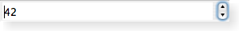

| Home · All Classes · Modules · QSS HELP · QSS 案例 · VER007 HOME |
该QSpinBox类提供了一个微调框控件。More...
该QSpinBox类提供了一个微调框控件。
QSpinBox是专门用来处理整数和值（例如，月份名称）的离散套;使用QDoubleSpinBox浮点值。
QSpinBox允许用户通过点击向上/向下键或按上/下键盘上的增加/减少当前显示的值来选择一个值。用户也可以输入值手动。旋转框支持整数值，但可以扩展到使用不同的字符串与validate（ ）textFromValue（）和valueFromText（ ） 。
每次值更改QSpinBox放出valueChanged（ ）信号。电流值可与提取value（ ），并设置用setValue（ ） 。
点击向上/向下按钮，或者使用键盘快捷键的向上和向下箭头会增加或减少步大小的当前值singleStep（ ） 。如果你想改变这种行为，您可以重新实现虚函数stepBy（ ） 。的最低和最高值和步长可以使用构造函数之一被设置，并且可以用以后改变setMinimum（ ）setMaximum（）和setSingleStep（ ） 。
大多数旋转框是有方向性的，但QSpinBox也可以作为一个圆形的旋转框，即如果经营范围是0-99 ，电流值是99 ，点击“向上”将给0，如果wrapping（ ）设置为True 。使用setWrapping（ ） ，如果你想圆行为。
所显示的值可以预先考虑并附加任意的字符串表示，例如，货币或计量单位。看setPrefix（）和setSuffix（ ） 。在旋转框中的文本与检索text（） （包括任何prefix（）和suffix（）），或用cleanText（） （其具有不prefix（ ），不suffix（）和没有前导或尾随空白） 。
常常希望给用户一个特殊（通常默认）选择除数值的范围。看setSpecialValueText（）对于如何与QSpinBox做到这一点。
| A spin box shown in the Windows XP widget style. | |
| A spin box shown in the Plastique widget style. | |
|  | A spin box shown in the Macintosh widget style. |
如果使用prefix（ ）suffix（）和specialValueText（ ）不提供足够的控制，你的子类QSpinBox和重新实现valueFromText（）和textFromValue（ ） 。例如，下面是一个自定义的旋转框，允许用户输入图标大小（例如， “ 32× 32” ）的代码：
int IconSizeSpinBox.valueFromText(const QString &text) const { QRegExp regExp(tr("(\\d+)(\\s*[xx]\\s*\\d+)?")); if (regExp.exactMatch(text)) { return regExp.cap(1).toInt(); } else { return 0; } } QString IconSizeSpinBox.textFromValue(int value) const { return tr("%1 x %1").arg(value); }
请参阅Icons示例的完整源代码。
该parent的说法，如果不是没有，原因self通过Qt的，而不是PyQt的拥有。
构造一个微调框以0为最低值， 99为最高值，为1的步长值。的值被初始设置为0 。这是对父parent。
See also setMinimum（ ）setMaximum（）和setSingleStep（ ） 。
从重新实现QObject.event（ ） 。
从重新实现QAbstractSpinBox.fixup（ ） 。
便利的功能设置minimum和maximum值与一个函数调用。
setRange(minimum, maximum);
相当于：
setMinimum(minimum); setMaximum(maximum);
这种方法也是一个Qt槽与C + +的签名void setValue(int)。
这个虚函数所使用的旋转框时，它需要显示给定的value。默认实现返回一个包含一个字符串value用印在标准方式QWidget.locale（ ） 。 toString（）方法，但与千位分隔符去掉。重新实现可能返回任何东西。 （参见在详细描述中的示例。）
注意：QSpinBox不会调用此函数specialValueText（）和既不prefix（ ）也不suffix（ ）应包括在返回值。
如果你重新实现这一点，您可能还需要重新实现valueFromText（）和validate（ ）
See also valueFromText（ ）validate（）和QLocale.groupSeparator（ ） 。
从重新实现QAbstractSpinBox.validate（ ） 。
这个虚函数所使用的旋转框时，它需要解释text由用户输入的值。
这需要在一个非数字的方式显示数字显示框的值的子类需要重写本函数。
注意：QSpinBox手柄specialValueText（ ）分开，此功能只关心其他值。
See also textFromValue（）和validate（ ） 。
这是该信号的默认超载。
这个信号被发射时旋转框的值被改变。新值的整数值传递i。
这是一个重载函数。
新的值是逐字传递text没有prefix（）或suffix（ ） 。
| PyQt 4.10.3 for X11 | Copyright © Riverbank Computing Ltd and Nokia 2012 | Qt 4.8.5 |